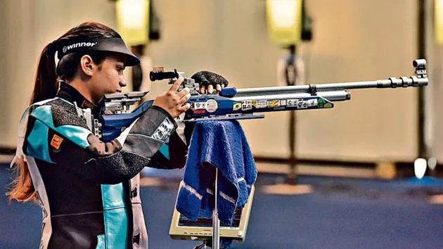

Led by a national shooter
Founded and coached by Saurabh Kumar, a national-level athlete and competitive shooter.
ISSF-compliant range
A proper 10m air rifle and pistol range with an automated electronic scoring system.
No equipment to buy
Rifles, pistols and every consumable are provided — nothing extra for parents to arrange.
Works with local schools
Training is run in collaboration with schools, fitting around a student's academics.
Welcome to PINAKA
Founded by a dedicated team led by Saurabh Kumar, a distinguished national athlete and accomplished shooter, PINAKA is more than just a rifle shooting club — it's a pathway to excellence. Our mission is to nurture the next generation of national athletes by providing top-notch training and mentorship.
Facilities @ PINAKA
- 10m shooting range complying to ISSF Norms, with automated card machine
- Designed courses for shooters at all levels
- 10m Air rifle and Pistol
- All Consumables provided
- Full-time dedicated coaching and training
- Training in collaboration with schools
Career in Shooting
- Be a part of Indian national shooting team
- Participate in Competitions
- State Shooting Competition
- Open Shooting Championship
- All India IPSC Shooting Competitions/SGFI/CBS
- National Shooting Championship
- National Game
- National / International Selection Trial
- Sports quota jobs in armed forces, Railways, CCL, and PSUs
- Sports quota advantage in Competitive exams
Why parents trust PINAKA
Shooting is one of the most disciplined, focus-building sports a student can take up — and at PINAKA, every session is supervised and structured around safety first.
Full-time, dedicated coaching
Every shooter trains under direct, full-time supervision — never left to handle equipment unguided.
Assessed before assigned
New shooters get a technical and physical assessment first, so they're placed in the discipline — rifle or pistol — that suits them.
Mind and body, not just aim
Yoga, breathing and balance practice are part of training — building the calm and focus that carries over to schoolwork too.
A genuine academic edge
Competitive shooting opens sports-quota opportunities in armed forces, Railways, PSUs and competitive exams later on.

Saurabh Kumar
A national-level athlete and competitive shooter, Saurabh leads every PINAKA session personally — from a child's first 1-hour foundation class to multi-month training for state and national competitions.
At PINAKA, we take pride in developing talent from the grassroots level, guiding school students and aspiring athletes toward their full potential on the national stage — with discipline, sportsmanship and safety at the centre of everything.
Good to know before you join
Yes. Every session runs under full-time, dedicated coaching, and new shooters start with a guided Foundation programme covering technical, mental and physical basics before handling competition-level drills.
No. PINAKA provides the 10m air rifle, air pistol, and all consumables for the entire programme — there's nothing extra to purchase to get started.
PINAKA is an ISSF-style 10m air rifle and pistol academy — the same Olympic discipline used in school and national shooting sport, run on a supervised indoor range with electronic scoring, not a firearms range.
Yes — PINAKA trains in collaboration with local schools, and the Foundation course is structured as a focused 1-hour daily session.
Shooters progress through state and national competitions, with sports-quota pathways into armed forces, Railways, CCL, PSUs, and an advantage in competitive exams.